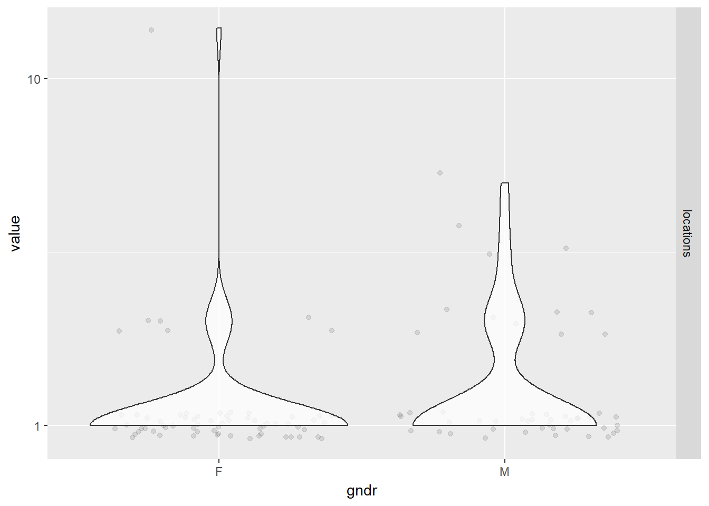

Chapter 5 Primary Analysis
5.1 Physician Demographics
Since practitioners who are affiliated with a hospital may not have a choice in using EHR or not, we will exclude these from our analysis population, which is now just the practitioners who enrolled in the Medicare Incentive Program who are not affiliated with any hospital, which come from the data set EPs that we cleaned in section 4.1.
We will use logistic regression because we have a dichotomous outcome (EHR used: Y/N) and want to explore the relationship between the outcome and other predictor/explanatory variables. The coefficients generated from logistic regression will give us a formula to predict a logit transformation of the probability of the outcome. The general formula will look like this:
\[ ln\left(\frac{p}{1-p}\right) = \beta_0 + \beta_1X_1 + \beta_2X_2 + ....+\beta_kX_k \]
5.1.1 Exploratory
Before fitting our model, we explored the relationships between our variables of interest using Association Rule Learning. We will use the R package called arulesViz to help us visualize this because we have mostly categorical variables with too many levels for simple correlation matrices to handle.
Here, each “transaction” is a practitioner who adapted EHR as part of the Medicare EHR Incentive Program in the U.S.
# first need to keep certain associational variables of interest and discretize them
corr <- EPs %>% ungroup() %>% filter(med_sch != "OTHER") %>%
select(gndr, grd_yr, pri_spec, st) %>%
mutate(grd_yr = as.factor(grd_yr),
st = as.factor(st))
# convert from a data frame to a transaction dataset
corrt <- as(corr, "transactions")
# create rules using the apriori
rules <- apriori(corrt, parameter=list(support=0.01, confidence=0.5))## Apriori
##
## Parameter specification:
## confidence minval smax arem aval originalSupport maxtime support minlen
## 0.5 0.1 1 none FALSE TRUE 5 0.01 1
## maxlen target ext
## 10 rules FALSE
##
## Algorithmic control:
## filter tree heap memopt load sort verbose
## 0.1 TRUE TRUE FALSE TRUE 2 TRUE
##
## Absolute minimum support count: 919
##
## set item appearances ...[0 item(s)] done [0.00s].
## set transactions ...[203 item(s), 91966 transaction(s)] done [0.03s].
## sorting and recoding items ... [90 item(s)] done [0.00s].
## creating transaction tree ... done [0.04s].
## checking subsets of size 1 2 3 done [0.00s].
## writing ... [80 rule(s)] done [0.00s].
## creating S4 object ... done [0.00s].plot(rules)
The result is a a set of 80 association rules with generally high confidence and low support (proportion of transactions in the data set which contain the item set). Let’s first trim this down a bit to show only important rules (confidence > 0.85). We’ll pick the top 30 rules so we have a smaller subset to find meaningful relationships.
The top 30 rules are chosen with respect to the lift measure (a measure of rule strength) - the deviation of the support of the whole rule from the support expected under independence given the supports of both sides of the rule.
subrules <- rules[quality(rules)$confidence > 0.85]
inspect(head(sort(subrules, by ="lift"),30))## lhs rhs support confidence
## [1] {pri_spec=NURSE PRACTITIONER} => {gndr=F} 0.02473740 0.9009901
## [2] {grd_yr=1976} => {gndr=M} 0.01154775 0.8530120
## lift count
## [1] 2.265309 2275
## [2] 1.416338 1062plot(subrules, method="grouped", control=list(k=50))
We concluded the following:
- Medical School, Primary Specialty, and Gender had the most meaningful associations
- However, we would choose only one of medical school or primary specialty. They are likely highly correlated because there are specialty-specific schools such as chiropractic schools.
Now we need to explore the relationships of our continuous independent variables
- Years since graduation by gender using jittered violin plots
EPs %>% melt(id.vars="gndr", measure.vars="yrs_grd") %>%
ggplot(aes(gndr, value)) +
geom_jitter(alpha = 0.1) +
geom_violin(alpha = 0.75) +
facet_grid(variable ~ .) +
scale_y_sqrt()
Gender seems to be pretty independent of the number of years since graduation so we should be able to add both to the model without influencing each other’s effects. The distribution of years since graduation is skewed, so we used a square root scale to make the kernel density curves look more symmetric in the plots than it otherwise would have been. The actual values of the years since graduation were left alone so we could intuitively interpret the results from our model.
- Number of locations by gender using jittered violin plots
EPs %>% melt(id.vars="gndr", measure.vars="locations") %>%
ggplot(aes(gndr, value)) +
geom_jitter(alpha = 0.1) +
geom_violin(alpha = 0.75) +
facet_grid(variable ~ .) +
scale_y_log10()While practice locations seem to be distributed evenly between males and females, note that the large majority of physicians in our data set have only one location. There are a few outliers who have over 300 unique zip codes associated with their practices.
- Years since graduation by credentials using bubble plots
EPs %>% mutate(cred = reorder(cred, yrs_grd)) %>%
ggplot(aes(cred, yrs_grd)) +
stat_sum(aes(size = ..n.., group = 1)) +
scale_size_area(max_size = 10)
Credentials (physician degrees) had one of the fewest number of levels, so we wanted to see if it was a good candidate for our model. The distribution of years since graduation looked pretty consistent across different credentials. Unfortunately, there were disproportionally high numbers of physicians with credentials listed as N/A (~75%), meaning their credential was unknown, so we could not use this variable in our model.
- Gender, years since graduation, and number of locations by EHR use
# scatter plot matrix of all three effects plus EHR use
EPs %>% ggpairs(columns = c("gndr", "yrs_grd", "locations", "ehr"))## `stat_bin()` using `bins = 30`. Pick better value with `binwidth`.
## `stat_bin()` using `bins = 30`. Pick better value with `binwidth`.
## `stat_bin()` using `bins = 30`. Pick better value with `binwidth`.
## `stat_bin()` using `bins = 30`. Pick better value with `binwidth`.
# bubble plot of years since graduation by EHR use
EPs %>% ggplot(aes(ehr, yrs_grd)) +
stat_sum(aes(size = ..n.., group = 1)) +
scale_size_area(max_size = 10)# jittered violin plot of years since graduation by EHR use
EPs %>% melt(id.vars="ehr", measure.vars="yrs_grd") %>%
ggplot(aes(ehr, value)) +
geom_jitter(alpha = 0.1) +
geom_violin(alpha = 0.75) +
facet_grid(variable ~ .) +
scale_y_sqrt()- Again, we can confirm that all three variables of interest (gender, years since graduation, and number of locations) are not strongly correlated with each other at all. We can safely add them into the final model without interaction terms.
- From the this scatter plot matrix, it is apparent that the distribution of gender and years since graduation differ by EHR use (as indicated by the red and blue colors, blinded here because we want to give you some suspense dun dun dun - but actually, we just couldn’t get the legend to not completely cover the density curves).
- A general observation from the bubble and violin plots is that there are proportionally more physicians in our data who have not used EHR. so we already have an imbalance in sample size between the two groups. But overall, our sample size is still large enough.
5.1.2 Final Analysis
5.1.2.1 Fit the Logistic Model
Our final physician-level logistic regression model looked like this: \[ logit(EHR) = \beta_0 + \beta_1(gender) + \beta_2(years~since~grad) + \beta_3(location) \]
# fit the model
model <- glm(ehr ~ gndr + yrs_grd + locations, data = EPs, family = binomial)
summary(model)##
## Call:
## glm(formula = ehr ~ gndr + yrs_grd + locations, family = binomial,
## data = EPs)
##
## Deviance Residuals:
## Min 1Q Median 3Q Max
## -0.7116 -0.4564 -0.3538 -0.3037 2.5340
##
## Coefficients:
## Estimate Std. Error z value Pr(>|z|)
## (Intercept) -3.1736081 0.0165219 -192.085 <2e-16 ***
## gndrM 0.6964365 0.0165690 42.033 <2e-16 ***
## yrs_grd 0.0166015 0.0005856 28.349 <2e-16 ***
## locations 0.0020854 0.0023454 0.889 0.374
## ---
## Signif. codes: 0 '***' 0.001 '**' 0.01 '*' 0.05 '.' 0.1 ' ' 1
##
## (Dispersion parameter for binomial family taken to be 1)
##
## Null deviance: 128120 on 232754 degrees of freedom
## Residual deviance: 124587 on 232751 degrees of freedom
## AIC: 124595
##
## Number of Fisher Scoring iterations: 5#table of odds ratios with 95% CI
(ORtab <- exp(cbind(OR = coef(model), confint(model))))## Waiting for profiling to be done...## OR 2.5 % 97.5 %
## (Intercept) 0.04185232 0.04051644 0.04322772
## gndrM 2.00658945 1.94253308 2.07289203
## yrs_grd 1.01674007 1.01557342 1.01790742
## locations 1.00208755 0.99665828 1.00611723Holding years since graduation and locations at a fixed value, the odds of adopting EHR for males is 2.01 the odds of adopting EHR for females. Holding gender (male) and locations at a fixed value, the odds of adopting EHR has a 1.67% increase for each additional year since graduation.
We did not find a statistically significant effect in the number of practice locations on the use of EHR, so this makes me feel better about collapsing the records by unique physicians and losing the specific location information like city, state, and zip code. If owning practices in various different locations had an effect on EHR use, then we would have needed to consider fitting a mixed effects model that takes into account the random effects of the different locations these physicians practice in, or consider a repeated measures analysis on the non-collapsed data where a physician can have repeated records for each unique location of their practice, etc. But since we lack statistical evidence for the number of practice locations to show an effect on EHR use, we have no reason to seek a better model to fit.
5.1.2.2 Predicted Probabilities
We can look at the effects of varying years since graduation by gender while holding the number of practice locations constant at its sample mean on the outcome of EHR use with a ribbon plot of the predicted probabilities.
# create a table of predicted probabilities varying the value of years since graduation and gender
varyvals <- with(EPs, data.frame(yrs_grd = rep(seq(from = min(yrs_grd), to = max(yrs_grd), length.out = 100),
2), locations = mean(locations), gndr = factor(rep(c('M','F'), each = 100))))
pred <- cbind(varyvals, predict(model, newdata = varyvals, type = "link",
se = TRUE))
pred <- within(pred, {
PredictedProb <- plogis(fit)
LL <- plogis(fit - (1.96 * se.fit))
UL <- plogis(fit + (1.96 * se.fit))
})
# ribbon plot
ggplot(pred, aes(x = yrs_grd, y = PredictedProb)) +
geom_ribbon(aes(ymin = LL, ymax = UL, fill = gndr), alpha = 0.2) +
geom_line(aes(colour = gndr), size = 1)
Well, how well does the model with these predictors fit compared to a null model? Let’s perform the likelihood ratio test using a chi-square test of {r} with(model, null.deviance - deviance) (the difference in deviance for the two models) with {r} with(model, df.null - df.residual) degrees of freedom on our observed data, which gives us the following p-value:
with(model, pchisq(null.deviance - deviance, df.null - df.residual, lower.tail = FALSE))## [1] 0Looks like our model did pretty well!
5.2 Hospital Demographics
Now let’s focus on the other type of providers eligible for the Medicaid & Medicare EHR Incentive Program: the hospitals. Recall that in this analysis population, we included only the physicians who are affiliated with any hospital and aggregated their demographics and EHR use at the hospital level. This is because the use of EHR would no longer depend on the physicians themselves, but rather the hospitals who decide to participate in the program. Since the aggregated physician demographics are not reliable demographic representations of the hospitals, as discussed in the Data chapter, we will only perform exploratory analysis on them and focus on the scraped hospital demographics (staffed beds, total discharges, patient days, gross patient revenue) for the final analysis.
5.2.1 Exploratory Analysis
Number of practitioners in hospital We suspect that if there is less than 10 physicians in our data per hospital, it is not an accurate representation of the hospital. i.e. The 10 practitioners may not accurately represent the entire group of practitioners in the hospital. We thought of excluding the hospitals with less than 10 practitioners in the data, but it would mean removing 108 out of 166 hospitals in the “control group” that does not use EHR.
Therefore, while we will keep the aggregated variables, we should keep in mind that these variables may not be accurate representation of hospital demographics. e.g. Number of practitioners in the dataset may be only ten, while the hospital actually employees 500 practitioners.
#RECODE Using EHR_use==1 -> Y, 0 -> ""
hosps$EHR_char <- ifelse(hosps$EHR_use == 1, "Y", "Blank")
#RECODE Years since medical school graduation
hosps$yrs_since_grad = 2017 - hosps$avg_grad_year
table(hosps$EHR_use)##
## 1 0
## 1701 156less10ind <- which(hosps$num_phys <= 10)
table(hosps[less10ind,]$EHR_use)##
## 1 0
## 52 1145.2.1.1 Box plots
Each box plot shows an independent variable’s distribution grouped by electronic use or not.
boxplot(Staffed_beds~EHR_use,data=hosps,
xlab="EHR Use", ylab="Staffed_beds", ylim = c(0,1000))
boxplot(Total_discharges~EHR_use,data=hosps,
xlab="EHR Use", ylab="Total discharge")
boxplot(Patient_days~EHR_use,data=hosps,
xlab="EHR Use", ylab="Patient days")boxplot(Gross_patient_revenue~EHR_use,data=hosps,
xlab="EHR Use", ylab="Yearly gross patient revenue")boxplot(num_phys~EHR_use ,data=hosps,
xlab="EHR Use", ylab="Number of Practitioners")boxplot(female_prop~EHR_use ,data=hosps,
xlab="EHR Use", ylab="Proportion of Female")boxplot(yrs_since_grad~EHR_use ,data=hosps,
xlab="EHR Use", ylab="Years since graduation")boxplot(n_specialty~EHR_use ,data=hosps,
xlab="EHR Use", ylab="Number of specialties")5.2.1.2 Correlations among variables
#Correlation Matrix
my_colors <- brewer.pal(nlevels(as.factor(hosps$EHR_use)), "Set1")## Warning in brewer.pal(nlevels(as.factor(hosps$EHR_use)), "Set1"): minimal value for n is 3, returning requested palette with 3 different levelsscatterplotMatrix(~num_phys+female_prop+Staffed_beds+Total_discharges+Patient_days+Gross_patient_revenue|EHR_use, data=hosps, col=my_colors , smoother.args=list(col="grey") , cex=1.5 , pch=c(15,16))
5.2.1.3 Normality Check
We notice that many of the predictor variables are not normally distributed in the above scatter plot. We logged the predictor variables that are skewed to be normally distributed.
#Variables that are not normally distributed are logged: num_phys, staffed_bed, Gross_patient_revenue
hosps$num_phys_log <- round(log(hosps$num_phys),2)
hosps$staffed_beds_log <- round(log(hosps$Staffed_beds),2)
hosps$gross_patient_rev_log <- round(log(hosps$Gross_patient_revenue),2)
hosps$total_discharge_log <- round(log(hosps$Total_discharges),2)
hosps$patient_days_log<- round(log(hosps$Patient_days),2)
#Check for normality after logging
qqnorm(hosps$num_phys_log)
qqline(hosps$num_phys_log)qqnorm(hosps$staffed_beds_log)
qqline(hosps$staffed_beds_log)
qqnorm(hosps$gross_patient_rev_log)
qqline(hosps$gross_patient_rev_log)qqnorm(hosps$total_discharge_log)
qqline(hosps$total_discharge_log)qqnorm(hosps$patient_days_log)
qqline(hosps$patient_days_log)From observing qq-plots after taking log on the variables, we get much closer to normality for each variables. Now note some of correlations. Now let’s look at the correlation matrix again with the normalized variables.
[General trends noticeable from the correlation matrix.] Years since graduation is relevant only to MD, so it is not applicable to all practitioners Female proportion is not associated with any other variables EHR seems most heavily correlated (correlation coefficients over 0.7) with num_phys, n_specialty, staffed_bed, and gross patient revenue. Potential confounding Factors: We can see that all four variables have positive correlation with each other. IN particular, total discharge has very strong positive association with patient days (coef = 0.99)
#Correlation Matrix with logged variables
#Final table
scatterplotMatrix(~staffed_beds_log+total_discharge_log + patient_days_log
+gross_patient_rev_log|EHR_use, data=hosps, col=my_colors , smoother.args=list(col="grey") , cex=1.5 , pch=c(15,16))hosps_cor3 <- hosps %>% ungroup() %>%
mutate(EHR_use = ifelse(EHR_use=='1', 1, 0)) %>%
select(staffed_beds_log, total_discharge_log, patient_days_log, gross_patient_rev_log)
tidy(round(cor(hosps_cor3, use = "complete.obs"), 2))## .rownames staffed_beds_log total_discharge_log
## 1 staffed_beds_log 1.00 0.86
## 2 total_discharge_log 0.86 1.00
## 3 patient_days_log 0.88 0.99
## 4 gross_patient_rev_log 0.81 0.91
## patient_days_log gross_patient_rev_log
## 1 0.88 0.81
## 2 0.99 0.91
## 3 1.00 0.90
## 4 0.90 1.00The difference in distributions is not as apparent by the use of EHR. We believed that the gross patient revenue, which may be implying overall hospital size, is a confounding factor that affects other predictor variables. We can also observe this in the strong correlation (above 0.8) between GPR and staffed beds, GPR and total discharge, and GPR and patient days. Thus, we will stratify on gross patient revenue. Let’s see if other predictor variables still have effect on EHR use proportion after stratifying on GPR.
hosps$gpr_grp = cut(hosps$gross_patient_rev_log,
quantile(hosps$gross_patient_rev_log, prob = seq(0, 1, .2), na.rm = TRUE), include.lowest = TRUE)
filter_var = "total_discharge_log" #"staffed_beds_log" #"patient_days_log"
hosps %>% filter(!is.na(gpr_grp)) %>%
group_by(gpr_grp) %>%
do(tidy(glm(EHR_use ~ staffed_beds_log + total_discharge_log + patient_days_log,
data = ., family="binomial"), conf.int = TRUE)) %>%
filter(term==filter_var)## # A tibble: 5 x 8
## # Groups: gpr_grp [5]
## gpr_grp term estimate std.error statistic
## <fctr> <chr> <dbl> <dbl> <dbl>
## 1 [8.2,11.9] total_discharge_log -1.967436 0.491234 -4.0050898
## 2 (11.9,12.7] total_discharge_log -4.927093 1.449333 -3.3995581
## 3 (12.7,13.4] total_discharge_log -4.829553 2.695692 -1.7915816
## 4 (13.4,14.1] total_discharge_log -2.275644 1.916510 -1.1873892
## 5 (14.1,16.5] total_discharge_log -1.453429 1.998146 -0.7273889
## # ... with 3 more variables: p.value <dbl>, conf.low <dbl>,
## # conf.high <dbl>We are only showing the statistical results on total discharge because it is the only demographic that has a different significance in effect on EHR use across the stratification of gross patient revenue, as evident by the p-values. So in our final model, we will use total discharge and gross patient revenue and their interaction term.
5.2.2 Final Analysis
We are just running the models below to show you our process of choosing the best fitting model, by splitting our data into training and test sets.
Train <- createDataPartition(hosps$EHR_use, p=0.6, list=FALSE)
training <- hosps[Train, ]
testing <- hosps[-Train, ]
# first model with all hosptial demographics
glm1 <- glm(EHR_use ~ gross_patient_rev_log + staffed_beds_log + total_discharge_log + patient_days_log +staffed_beds_log:gross_patient_rev_log + total_discharge_log:patient_days_log, data=training, family = "binomial")
summary(glm1)##
## Call:
## glm(formula = EHR_use ~ gross_patient_rev_log + staffed_beds_log +
## total_discharge_log + patient_days_log + staffed_beds_log:gross_patient_rev_log +
## total_discharge_log:patient_days_log, family = "binomial",
## data = training)
##
## Deviance Residuals:
## Min 1Q Median 3Q Max
## -2.0305 -0.3535 -0.2603 -0.2060 2.9414
##
## Coefficients:
## Estimate Std. Error z value
## (Intercept) 24.29327 5.39258 4.505
## gross_patient_rev_log -2.30611 0.49088 -4.698
## staffed_beds_log -4.75227 1.36357 -3.485
## total_discharge_log -2.61047 0.69616 -3.750
## patient_days_log 2.73517 0.69808 3.918
## gross_patient_rev_log:staffed_beds_log 0.40783 0.10677 3.820
## total_discharge_log:patient_days_log -0.06185 0.04895 -1.264
## Pr(>|z|)
## (Intercept) 6.64e-06 ***
## gross_patient_rev_log 2.63e-06 ***
## staffed_beds_log 0.000492 ***
## total_discharge_log 0.000177 ***
## patient_days_log 8.92e-05 ***
## gross_patient_rev_log:staffed_beds_log 0.000134 ***
## total_discharge_log:patient_days_log 0.206382
## ---
## Signif. codes: 0 '***' 0.001 '**' 0.01 '*' 0.05 '.' 0.1 ' ' 1
##
## (Dispersion parameter for binomial family taken to be 1)
##
## Null deviance: 624.20 on 1106 degrees of freedom
## Residual deviance: 484.11 on 1100 degrees of freedom
## (8 observations deleted due to missingness)
## AIC: 498.11
##
## Number of Fisher Scoring iterations: 6p_hat_logit <- predict(glm1, newdata = testing, type="response")
y_hat_logit <- ifelse(p_hat_logit > 0.5, 1, 0)
confusionMatrix(data = y_hat_logit, reference = testing$EHR_use)## Warning in confusionMatrix.default(data = y_hat_logit, reference = testing
## $EHR_use): Levels are not in the same order for reference and data.
## Refactoring data to match.## Confusion Matrix and Statistics
##
## Reference
## Prediction 1 0
## 1 16 19
## 0 662 43
##
## Accuracy : 0.0797
## 95% CI : (0.0612, 0.1016)
## No Information Rate : 0.9162
## P-Value [Acc > NIR] : 1
##
## Kappa : -0.0495
## Mcnemar's Test P-Value : <2e-16
##
## Sensitivity : 0.02360
## Specificity : 0.69355
## Pos Pred Value : 0.45714
## Neg Pred Value : 0.06099
## Prevalence : 0.91622
## Detection Rate : 0.02162
## Detection Prevalence : 0.04730
## Balanced Accuracy : 0.35857
##
## 'Positive' Class : 1
## Because total discharge and patient days have very high correlation (0.99), pick out one out of the two - total discharge. Also, because we observed from correlation plots that staffed beds and the gross patient revenue are highly correlated, we add interaction variable to the model.
glm2 <- glm(EHR_use ~ gross_patient_rev_log + staffed_beds_log + gross_patient_rev_log*staffed_beds_log + total_discharge_log, data=training, family = "binomial")
summary(glm2)##
## Call:
## glm(formula = EHR_use ~ gross_patient_rev_log + staffed_beds_log +
## gross_patient_rev_log * staffed_beds_log + total_discharge_log,
## family = "binomial", data = training)
##
## Deviance Residuals:
## Min 1Q Median 3Q Max
## -1.6894 -0.3466 -0.2697 -0.2300 2.7863
##
## Coefficients:
## Estimate Std. Error z value
## (Intercept) 25.68744 5.31031 4.837
## gross_patient_rev_log -2.18995 0.47545 -4.606
## staffed_beds_log -3.37459 1.14599 -2.945
## total_discharge_log -0.44873 0.21107 -2.126
## gross_patient_rev_log:staffed_beds_log 0.31235 0.08909 3.506
## Pr(>|z|)
## (Intercept) 1.32e-06 ***
## gross_patient_rev_log 4.10e-06 ***
## staffed_beds_log 0.003233 **
## total_discharge_log 0.033503 *
## gross_patient_rev_log:staffed_beds_log 0.000455 ***
## ---
## Signif. codes: 0 '***' 0.001 '**' 0.01 '*' 0.05 '.' 0.1 ' ' 1
##
## (Dispersion parameter for binomial family taken to be 1)
##
## Null deviance: 624.20 on 1106 degrees of freedom
## Residual deviance: 501.48 on 1102 degrees of freedom
## (8 observations deleted due to missingness)
## AIC: 511.48
##
## Number of Fisher Scoring iterations: 6This time, we will pick total discharge instead of the staffed beds. Then we will compare two models (glm2 vs. glm3) using chisquare test.
glm3 <- glm(EHR_use ~ gross_patient_rev_log + total_discharge_log + gross_patient_rev_log*total_discharge_log, data=training, family = "binomial")
summary(glm3)##
## Call:
## glm(formula = EHR_use ~ gross_patient_rev_log + total_discharge_log +
## gross_patient_rev_log * total_discharge_log, family = "binomial",
## data = training)
##
## Deviance Residuals:
## Min 1Q Median 3Q Max
## -1.8495 -0.3370 -0.2777 -0.2550 2.6907
##
## Coefficients:
## Estimate Std. Error z value
## (Intercept) 35.18429 6.61203 5.321
## gross_patient_rev_log -3.02172 0.59662 -5.065
## total_discharge_log -3.64510 0.78982 -4.615
## gross_patient_rev_log:total_discharge_log 0.28840 0.06561 4.395
## Pr(>|z|)
## (Intercept) 1.03e-07 ***
## gross_patient_rev_log 4.09e-07 ***
## total_discharge_log 3.93e-06 ***
## gross_patient_rev_log:total_discharge_log 1.11e-05 ***
## ---
## Signif. codes: 0 '***' 0.001 '**' 0.01 '*' 0.05 '.' 0.1 ' ' 1
##
## (Dispersion parameter for binomial family taken to be 1)
##
## Null deviance: 624.20 on 1106 degrees of freedom
## Residual deviance: 503.86 on 1103 degrees of freedom
## (8 observations deleted due to missingness)
## AIC: 511.86
##
## Number of Fisher Scoring iterations: 6p_hat_logit <- predict(glm3, newdata = testing, type="response")
y_hat_logit <- ifelse(p_hat_logit > 0.5, 1, 0)
confusionMatrix(data = y_hat_logit, reference = testing$EHR_use)## Warning in confusionMatrix.default(data = y_hat_logit, reference = testing
## $EHR_use): Levels are not in the same order for reference and data.
## Refactoring data to match.## Confusion Matrix and Statistics
##
## Reference
## Prediction 1 0
## 1 11 16
## 0 667 46
##
## Accuracy : 0.077
## 95% CI : (0.0589, 0.0986)
## No Information Rate : 0.9162
## P-Value [Acc > NIR] : 1
##
## Kappa : -0.0419
## Mcnemar's Test P-Value : <2e-16
##
## Sensitivity : 0.01622
## Specificity : 0.74194
## Pos Pred Value : 0.40741
## Neg Pred Value : 0.06452
## Prevalence : 0.91622
## Detection Rate : 0.01486
## Detection Prevalence : 0.03649
## Balanced Accuracy : 0.37908
##
## 'Positive' Class : 1
## #chisquare test H0(null model): glm2, H1(alternative model):glm3
anova(glm3, glm2, test="Chisq")## Analysis of Deviance Table
##
## Model 1: EHR_use ~ gross_patient_rev_log + total_discharge_log + gross_patient_rev_log *
## total_discharge_log
## Model 2: EHR_use ~ gross_patient_rev_log + staffed_beds_log + gross_patient_rev_log *
## staffed_beds_log + total_discharge_log
## Resid. Df Resid. Dev Df Deviance Pr(>Chi)
## 1 1103 503.86
## 2 1102 501.48 1 2.3858 0.1224Because the anova test yields that glm3 is better, our final model is glm3 with two variables: total staffed beds and gross patient revenue. Our final physician-level logistic regression model looked like this: \[
logit(EHR) = \beta_0 + \beta_1(staffed~beds) + \beta_2(gross~patient~revenue) + \beta_3(interaction)
\]
Here is a table of odds ratios with 95% CI.
exp(cbind(OR = coef(glm3), confint(glm3)))## Waiting for profiling to be done...## OR 2.5 %
## (Intercept) 1.906966e+15 5.233109e+09
## gross_patient_rev_log 4.871726e-02 1.481991e-02
## total_discharge_log 2.611883e-02 5.560800e-03
## gross_patient_rev_log:total_discharge_log 1.334285e+00 1.172378e+00
## 97.5 %
## (Intercept) 9.745855e+20
## gross_patient_rev_log 1.541502e-01
## total_discharge_log 1.236346e-01
## gross_patient_rev_log:total_discharge_log 1.516940e+00Interpretation of the final model: If the total discharge is equal at 5000, with the 10% increase in the revenue, the odds of using EHR is 2.92 times higher. Similarly, if the gross patient revenue is equal at 5000 and the discharged increases by 10%, the odds of using EHR is 2.95 times higher.
Mathematically, if revenue increases 10% and discharge is the same, the odds of using EHR is the higher by \(1.102\cdot \log(1.1)-0.04\cdot \log(1.1)\cdot \log(discharge)\) times. If discharge increases by 10% while the revenue is the same, the odds of using EHR is higher by \(1.2411\cdot \log(1.1) - 0.046\cdot \log(1.1)\cdot \log(revenue)\)